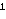
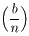
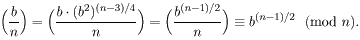
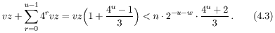
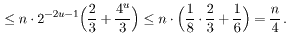
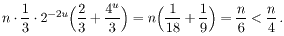
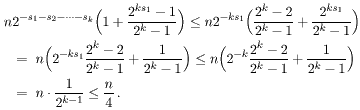
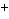

Neka je n neparan prirodan broj, (b,n) = 1, te
bn -1
≡ 1 (mod n).
Budući da je n -1 paran, možemo
pokušati "vaditi drugi korijen" iz ove kongruencije, tj.
dizati b na potencije (n-1)/2, (n-1)/4, ... ,
(n-1)/2s (gdje je
t = (n-1)/2s neparan broj).
Pretpostavimo da u i-tom koraku prvi put dobijemo na desnoj
strani nešto različito od 1, recimo
b(n-1)/2
≡ a
(mod n).
Tada ako je n prost, onda mora biti a = -1 jer
je b(n-1)/2
≡ 1
(mod n), a jedina rješenja
kongruencije x2
≡ 1 (mod p) su
x ≡
± 1 (mod p).
Ova činjenica motivira sljedeću definiciju.
Definicija: Neka je n neparan složen broj, te neka je
n - 1 = 2s.t,
gdje je t neparan broj. Neka je b
cijeli broj takav da je (b,n) = 1. Ako vrijedi
bt
≡ 1 (mod n), ili
postoji r, 0 ≤
r < s, takav da je
b2t
≡ -1 (mod n),
(***)
onda kažemo da je njaki pseudoprosti broj u bazi b
(ili spsp(b)).
Očito je svaki spsp(b) ujedno i psp(b).
Može se pokazati da je svaki spsp(b) ujedno i epsp(b).
Obrat ne vrijedi. Npr. n =561 je epsp(2) jer je
2280 ≡
(2/561) ≡ 1 (mod 561),
ali n nije spsp(2) jer
je 2280 ≡
1 (mod 561),
a 2140 ≡
67 (mod 561).
Teorem 4.3: Ako je n
≡ 3 (mod 4), onda je
n spsp(b) ako i samo ako je n
epsp(b).
Dokaz: U ovom slučaju je s = 1, t =
(n-1)/2. Ako je n epsp(b), onda je
bt
≡
b(n -1)/2
≡

≡
±1 mod (n),
pa je n spsp(b).
Neka je sada n spsp(b). To znači da je
b(n -1)/2
≡
±1 (mod n).
Budući da je n
≡ 3 (mod 4), to je
(±1/n) =
±1, pa je

■
Teorem 4.4: Neka je n neparan složen broj. Tada
je n jaki pseudoprosti broj u bazi b za najviše
25% baza b, 0 < b < n.
Dokaz: 1. slučaj:n nije kvadratno slobodan
Neka je n = p2q, gdje je p
prost. Ako je n spsp(b), onda
je n i psp(b). Pretpostavimo da je
bn -1
≡ 1 (mod n).
Tada je i
bn -1
≡ 1
(mod p2). Po
Lemi 4.1, ova kongruencija ima d =
(p(p -1), n -1) rješenja.
Budući da p|n, to
p ∤ (n -1),
pa p ∤ d.
Zato je d ≤
p -1. Stoga je broj baza b za koje je
n psp(b)
≤
dq ≤
(p -1)q =
(p2 -1)q/(p+1) < n/4.
2. slučaj:n = pq, gdje su p i q
različiti prosti brojevi
Neka je p - 1 = 2uv, q - 1 =
2wz, gdje su v i z
neparni, te u
≤ w.
Pretpostavimo da je bt
≡ 1 (mod n).
Po Lemi 4.1, takvih baza ima (t,v) ·
(t,z) ≤
vz.
Pretpostavimo sada da je
b2t
≡ -1 (mod p) za neki
r, 0 ≤
r < s. Po Lemi 4.1, ova kongruencija ima rješenja
ako i samo ako je r < u, a broj rješenja je
2r (t,v) ·
2r (t,z)
≤
4rvz. Budući da je n -1 > φ(n) =
2u+wvz, slijedi da prirodnih brojeva
b, 0 < b < n, za koje je n
spsp(b) ima najviše

Ako je u < w, onda je desna strana od (4.3)

Ako je u = w, onda barem jedna od nejednakosti
(t,v) ≤
v, (t,z)
≤ z mora biti
stroga, jer bi inače imali
0 ≡
2st
≡ pq -1
≡ q - 1
(mod v), pa bi iz v|(q - 1) =
2wz slijedilo da v|z.
Analogno bi dobili da z|v, što bi značilo da je
v = z i p = q, što je kontradikcija.
Dakle, u gornjim ocjenama možemo zamijeniti vz sa
vz/3. To dovodi do sljedeće ocjene za broj baza b za
koje je n spsp(b):

3. slučaj:n =
p1p2 · · ·
pk, gdje je
k ≥ 3,
a pi-ovi su različiti prosti brojevi
Neka je pj - 1 =
2stj,
tj neparan. Postupimo kao u 2.
slučaju. Možemo pretpostaviti da je s1
≥ sj, za sve j. Dobivamo sljedeću
ocjenu za broj baza b takvih da je n spsp(b):

■
Miller-Rabinov test prostosti:
Neka je n neparan broj za kojeg želimo ustanoviti da li je prost
ili složen. Neka je n - 1 =
2s.t, gdje je t neparan broj . Na slučajan način izaberemo b,
0 < b < n. Izračunamo bt
mod n. Ako dobijemo
±1, zaključujemo
da je n prošao test (***), te biramo sljedeći b.
U protivnom, uzastopno kvadriramo bt modulo
n sve dok ne dobijemo rezultat -1. Ako dobijemo -1, onda je
n prošao test (***). Ako nikad ne dobijemo -1, tj. ako dobijemo
da je b2t
≡ 1 (mod n),
ali b2t
≢ -1 (mod n),
onda znamo da je sigurno n složen. Ako n prođe test (***)
za k različitih b-ova, onda je vjerojatnost da je
n složen ≤ 1/4k.
Napomena: Uz pretpostavku da vrijedi tzv. generalizirana
Riemannova hipoteza (GRH), Miller-Rabinov test postaje
polinomijalni deterministički test. Naime, može se
pokazati da ako je GRH točna i ako je n složen broj,
onda mora postojati barem jedna baza
b < 2 ln2n za koju ne vrijedi (***).